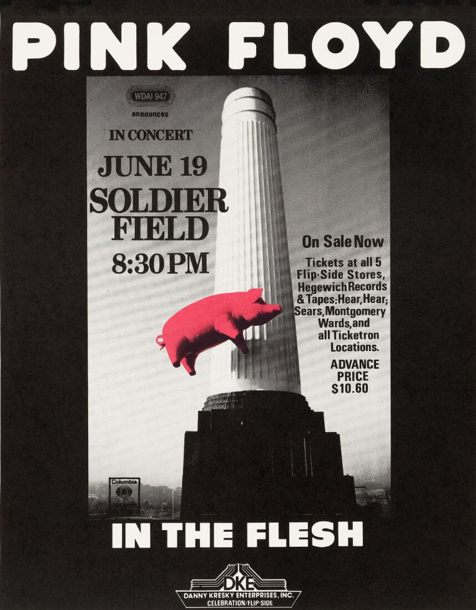
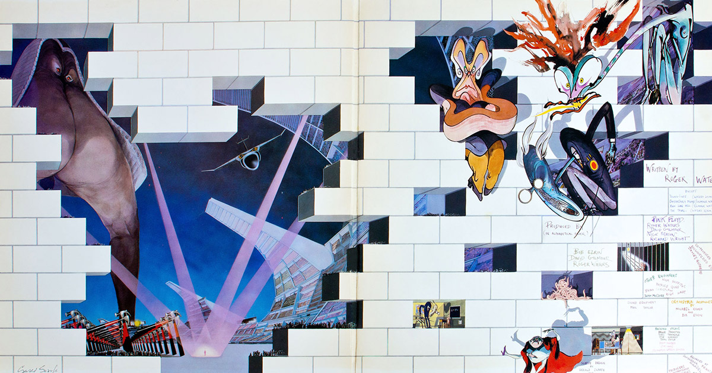
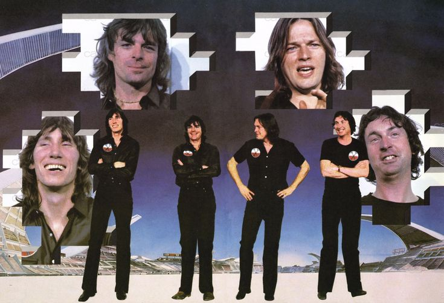
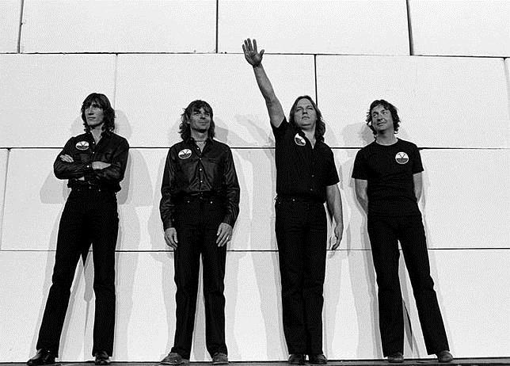
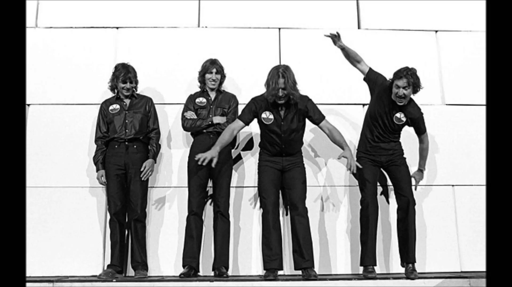
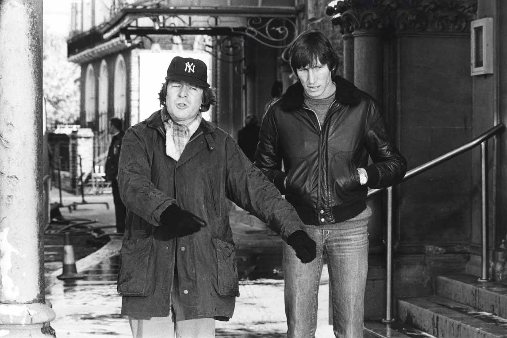

Historia del album conceptual: The Wall
Tras la gira In the Flesh Tour, Roger Waters quedó profundamente frustrado por la falta de conexión entre Pink Floyd y el público. Durante el último concierto en Montreal en 1977, llegó incluso a escupir a un fan, un hecho que inspiró la idea central de construir un “muro” entre la banda y la audiencia. Mientras otros miembros trabajaban en proyectos personales, Waters comenzó a desarrollar un nuevo álbum conceptual basado en el aislamiento, los traumas personales y la pérdida de su padre. En 1978 presentó la idea de The Wall, que la banda eligió frente a otro proyecto que luego se convertiría en The Pros and Cons of Hitch Hiking. Al mismo tiempo, la banda atravesaba graves problemas financieros debido a malas inversiones. Para organizar y mejorar el proyecto, contrataron al productor Bob Ezrin, quien ayudó a transformar la historia en una obra más sólida y teatral. Waters escribió la mayor parte del álbum, mientras David Gilmour colaboró en canciones importantes como Comfortably Numb y Run Like Hell.

Concepto e historia del album
The Wall es una ópera rock que explora el abandono y el aislamiento, simbolizados por un muro. Las canciones crean una historia de eventos en la vida de Pink, un personaje basado en el exlíder de Waters y Pink Floyd, Syd Barrett. El álbum incluye varias referencias a Barrett, incluida «Nobody Home», que insinúa su condición durante la fallida gira de Pink Floyd por Estados Unidos en 1967, con letras como «ojos salvajes y fijos», «la obligación permanente de Hendrix» y «bandas elásticas que mantienen mis zapatos puestos». «Comfortably Numb» se inspiró en la inyección de Waters con un relajante muscular para combatir los efectos de la hepatitis durante la gira In the Flesh en Filadelfia.




Historia sobre la idea de la película
ncluso antes de que se grabara el álbum original de Pink Floyd, la intención era hacer una película a partir de él. El plan original era que la película fuera metraje en vivo de la gira del álbum , junto con animaciones dirigidas por Gerald Scarfe y escenas adicionales, y que el propio Waters fuera el protagonista. EMI, el sello discográfico, no tenía intención de hacer la película, ya que no entendían el concepto.
El director Alan Parker, fan de Pink Floyd, preguntó a EMI si The Wall podía adaptarse al cine . EMI sugirió que Parker hablara con Waters, quien le había pedido a Parker que dirigiera la película
